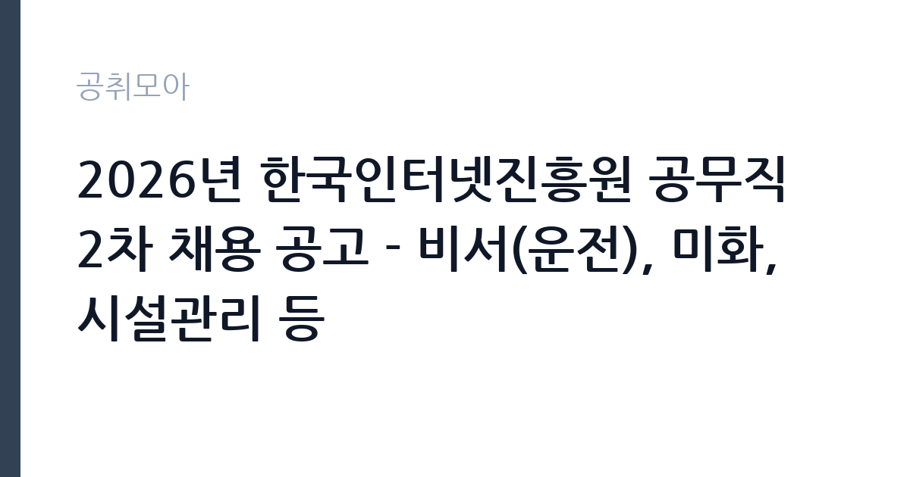

[공공기관] 2026년 한국인터넷진흥원 공무직 2차 채용 공고 - 비서(운전), 미화, 시설관리 등
한국인터넷진흥원 · 전남광주 · 마감 2026-10-06 (D-15) · 출처 잡알리오

한눈에 보는 모집 조건
| 기관 | 한국인터넷진흥원 |
|---|---|
| 공고명 | 2026년 한국인터넷진흥원 공무직 2차 채용 공고 - 비서(운전), 미화, 시설관리 등 |
| 고용형태 | 공무직 |
| 근무지 | 전남광주 |
| 게시일 | 2026-09-22 |
| 마감일 | 2026-10-06 (D-15) |
지원자격, 이렇게 읽으세요
- 공공기관 채용공시
- 세부 조건은 원문 공고문 확인
분야별 요건이 핵심이다. 비서(운전)는 1종 보통 면허 소지와 최근 5년 무사고 운전경력, 음주운전 법규 위반 경력 없음이라는 세 조건을 모두 충족해야 한다. 시설관리(전기)는 전기기사 취득 후 실무경력 1년 이상 등 조건 중 하나를 충족하면 된다. 운전경력의 기산일과 무사고 증빙 방법, 시설관리 분야의 세부 인정 범위는 원문 공고문에서 확인해야 한다. 공통 결격사유(부패방지법, 인사규정, 병역)도 함께 점검해야 한다.
이 공고의 포인트
한 공고에 여러 직종이 묶인 것이 이 모집의 특징이다. 비서 운전직은 기관장급 의전 운전을 맡는 자리로, 무사고 경력과 품행을 동시에 검증받는 구조다. 시설관리 전기는 청사 설비를 책임지는 기술직이다. 공무직이라 기간의 정함이 없는 고용이며, KISA 소속으로 4대보험과 기관 복지를 적용받는 안정성이 장점이다. 중복 지원 가능 여부는 원문에서 확인하고, 가능하다 해도 주력 분야 하나에 집중하는 편이 낫다.
전형은 어떻게 진행되나
전형은 서류전형과 면접전형이 기본이며, 운전직은 실기 성격의 운전 평가가 추가될 수 있다. 서류에서는 분야별 자격요건 충족 여부를 가리고, 면접에서는 직무 이해도와 인성을 평가한다. 운전경력증명서와 면허증, 자격증 같은 증빙은 발급에 시간이 걸리므로 접수 마감 전에 미리 준비해야 한다. 세부 전형과 배점은 원문 공고문에서 확인해야 한다.
원문에서 확인한 전형 방식
[공통사항] º 연령, 학력, 성별 제한 없음 - 단, 입사예정일 기준 KISA 정년(만 60세, 미화분야의 경우 만 65세)에 도달한 자 지원 불가 º 입사예정일부터 KISA 소속으로 전일 근무 가능한 자 º 「부패방지 및 국민권익위원회의 설치와 운영에 관한 법률」 제82조에 해당되지 않는 자 º 한국인터넷진흥원 인사규정 제7조(결격사유)에 해당하지 않는 자([붙임]) º 병역법 제76조에서 정한 병역의무 불이행 사실이 없는 자 [비서(운전] : 아래 조건을 모두 충족한 자 º 운전면허 1종 보통 면허 소지 º 접수마감일 기준 최근 5년간 무사고 운전경력자 º 운전경력 전체기간 동안 음주운전으로 인한 법규 위반 경력이 없는 자 [시설관리(전기)] : 아래 조건 중 1가지 이상 충족한 자 º 전기기사 자격을 취득한 후 실무경력 1년 이상인 자 º 전기산업기사 자격을 취득한 후 실무경력 2년 이상인 자 º 전기기능사 자격을 취득한 후 실무경력 3년 이상인 자 [시설관리(기계)] : 아래 조건 중 1가지 이상 충족한자 º 초급 이상 기계설비유지관리자 자격을 갖춘 자 º 보조 기계설비유지관리자 자격을 갖춘 자 [시설관
이런 분께 추천해요
- 1종 보통 면허에 5년 무사고 경력을 가진 운전 전문가
- 전기기사 자격과 실무경력을 갖춘 청사 시설관리 기술자
- 미화·시설 분야 경력으로 공공기관 공무직에 안착하려는 사람
지원 전 체크리스트
- 지원 분야(비서운전·미화·시설관리 등)를 하나 정하고 해당 요건을 확정한다
- 운전직은 면허·무사고·음주무위반 세 조건의 증빙 서류를 준비한다
- 시설관리는 전기기사 자격과 실무경력 인정 범위를 원문에서 대조한다
- 접수 마감일(10월 6일)과 분야별 중복 지원 가능 여부를 원문에서 확인한다
모집 일정과 제출 타이밍
접수는 2026년 10월 6일에 마감된다. 이후 분야별 서류심사와 면접을 거쳐 하반기 중 입사하는 흐름이 일반적이다. 운전직 실기 평가가 있다면 면접과 같은 날 또는 별도 일정으로 잡힐 수 있다. 정확한 전형 일정과 입사 예정일, 근무지는 원문 공고문에서 확인해야 한다.
직무 이해하기: 공공기관
비서(운전)는 임원급 의전 운전을 전담한다. 정시 운행과 안전 운전은 기본이고, 차량 점검과 유지관리, 운행 일지 작성이일상 업무다. 무사고 기록이 곧 실력이므로 방어운전 습관과 돌발 상황 대처가 중요하다. 시설관리(전기)는 청사 수배전과 조명, 냉난방 전원 계통을 점검하고 경미한 고장은 직접 수리한다. 미화는 청사 위생 관리를 맡는다. 분야는 달라도 보안 시설 근무라는 공통점이 있어 보안 수칙 준수가 필수다.
자기소개서 작성 팁
분야에 맞는 경험을 앞세워야 한다. 운전직은 무사고 기간과 장거리·의전 운전 경험을 수치로 제시하고, 안전운전 철학을 한 문장으로 정리하는 것이 좋다. 시설관리는 다뤄본 설비와 해결한 고장 사례를 구체적으로 쓴다. KISA라는 정보보호 기관의 특성을 언급하며 보안 의식을 강조하면 차별화된다. 여러 분야 경험을 나열하기보다 지원 분야 하나에 깊이를 싣는 구성이 낫다.
면접 준비 포인트
면접에서는 분야별 실무 질문이 나온다. 운전직은 돌발 상황 대처(타이어 펑크, 급환자 발생 시 조치)와 차량 관리 상식을 묻고,시설관리는 전기설비 점검과 정전 대응을 묻는다. 공통적으로 장기근무 의지와 보안 수칙 준수 의지를 확인한다. 운전직 지원자는 실제 운전 습관을 솔직하게 말하고, 시설관리 지원자는 현장 경험을 자신 있게 설명해야 한다.
급여·근무조건 읽는 법
정확한 분야별 보수액은 원문 공고문의 보수 항목에서 확인해야 한다. KISA 공무직은 진흥원 규정에 따른 보수를 받고 4대보험에 가입되는 구조가 일반적이다. 운전·시설·미화 분야 간에 수당 체계가 다를 수 있으므로, 본인 지원 분야의 금액을 원문에서 확인하기 바란다. 경쟁률과 합격선은 공개되지 않으므로 원문에서 확인해야 한다.
자주 묻는 질문
- 여러 분야에 중복 지원이 가능한가요?
공고마다 다르므로 원문 공고문의 중복 지원 제한 항목을 확인해야 한다. 가능하더라도 서류와 면접 준비를 분산하면 불리하므로 주력 분야를 정하는 것이 좋다. - 운전직의 무사고 기준은 어떻게 되나요?
접수 마감일 기준 최근 5년간 무사고 운전경력이며, 음주운전 법규 위반 경력이 없어야 한다. 증빙 서류의 종류와 발급 방법은 원문에서 확인해야 한다. - 근무지는 나주인가요 서울인가요?
KISA는 나주 본원과 서울 분원을 운영하므로 분야별 근무지가 다를 수 있다. 본인 분야의 근무지는 원문 공고문에서 확인해야 한다.
함께 보면 좋은 공고
[공공기관] 한국토지주택공사 개방형 직위(감사실장, 준법감시관) 공모 — 마감 2026-10-07[공공기관] 한국도로공사 비상임이사 공모 — 마감 2026-09-29[공공기관] 2026년 하반기 2차 중소벤처기업진흥공단 체험형 청년인턴(장애인) 채용 공고 — 마감 2026-10-12출처: 잡알리오 공개정보를 바탕으로 공취모아가 정리한 안내글입니다. 모집 조건·일정은 변경될 수 있으니 지원 전 반드시 원문 공고문을 확인하세요. 본 글은 정보 제공용이며 합격을 보장하지 않습니다.